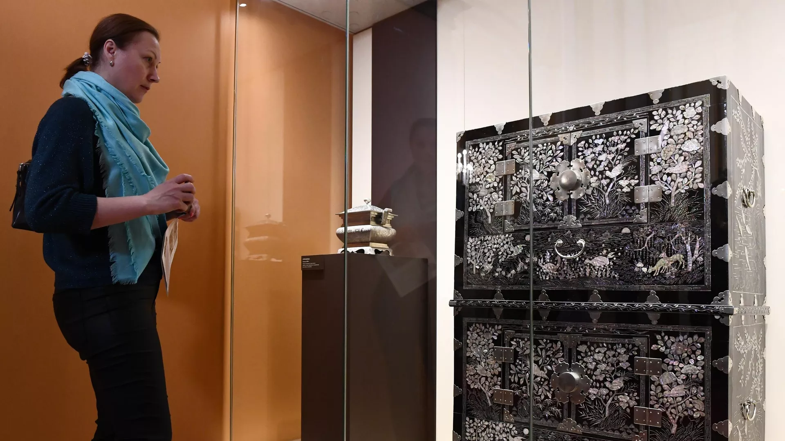
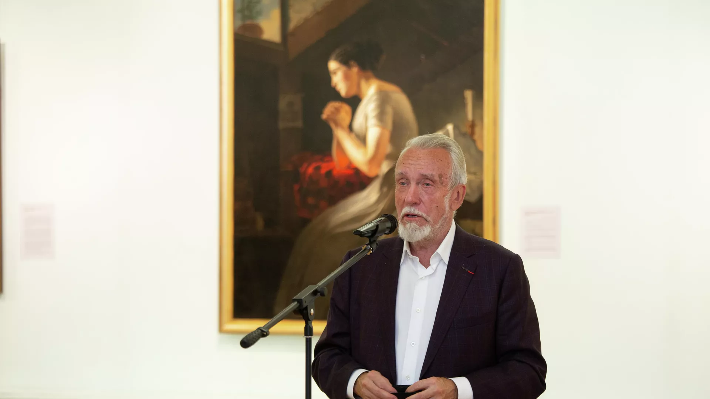
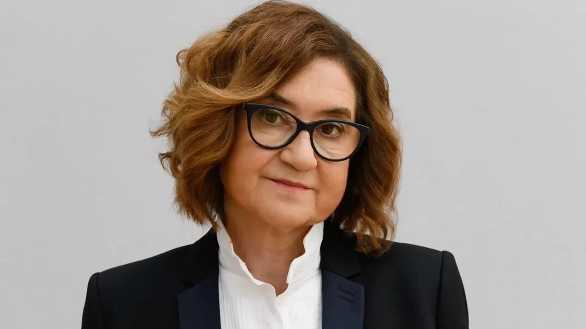

Выставка произведений корейских мастеров открылась в Оружейной палате
МОСКВА, 10 фев – РИА Новости. Выставка "Корея и Оружейная палата. История коронационного дара последнему императору" открылась в Москве, передает корреспондент РИА Новости.
Экспозиция посвящена дарам, которые были преподнесены императору Николаю II по случаю церемонии восшествия на престол. Реставрацией работ занимались сотрудники Всероссийского художественного научно-реставрационного центра имени академика Грабаря и ГМИИ имени Пушкина.
На выставке представлены экспозиции: двухъярусный шкаф нон, две курильницы и два свитка художника Чан Сынопа 1890-х годов.
"Сегодня мы представляем дары в том виде, в котором они были преподнесены в 1896 году. Это интересная связь России и Кореи", – сказал специальный представитель президента РФ по вопросам природоохранной деятельности, экологии и транспорта Сергей Иванов на открытии.

Гендиректор Русского музея перешел на должность его президента
С.-ПЕТЕРБУРГ, 10 фев – РИА Новости. Владимир Гусев, занимавший должность генерального директора Государственного Русского музея более 30 лет, стал его президентом, сообщила пресс-служба институции.
"Плановый переход Владимира Александровича на эту почетную должность произошел в соответствии с его личным обращением в Минкультуры России и связан с завершением трудового контракта", – говорится в сообщении.
Как отмечают в Русском музее, Гусев в статусе президента сосредоточится на координации реставрационных работ и развитии филиальной сети.
"Должность президента федерального учреждения расценивается ведомством как возможность сохранения для творческой деятельности наиболее опытных и заслуженных руководителей, которые внесли значимый личный вклад в развитие учреждения", – добавили в музее.

Глава Третьяковской галереи Трегулова покинула пост
МОСКВА, 9 фев — РИА Новости. Елену Проничеву назначили новым гендиректором Государственной Третьяковской галереи, говорится в сообщении на сайте Минкультуры России.
Трегулова возглавляла Третьяковскую галерею на протяжении восьми лет, с 2015 года. Под ее руководством было организовано множество масштабных выставочных, образовательных, просветительских и научных проектов.
Как подчеркнули в Минкультуры, новому гендиректору "предстоит сохранить лучший опыт сбережения фондов музея и продолжить развитие Государственной Третьяковской галереи и ее филиалов".
Елена Проничева с 15 декабря 2020 года возглавляла московский Политехнический музей.
Под ее руководством он значительно расширил публичную и выставочную программы. Мероприятия музея проходят по всей стране, планируется открытие филиалов — в Туле, Великом Новгороде и других городах России.
Елена Проничева — член Совета при президенте Российской Федерации по науке и образованию. В 2015 году была награждена премией Общероссийского общественного движения "За сбережение народа", а в 2019 году — почетной грамотой Московской городской думы.
Умер актер Сергей Столяров
МОСКВА, 4 фев - РИА Новости. Волгоград было бы справедливо переименовать не в Сталинград, а в Царицын, восстановив историческое название и избежав конфликта в обществе, считает председатель экспертного совета по церковному искусству, архитектуре и реставрации Русской православной церкви (РПЦ), член Патриаршего совета по культуре протоиерей Леонид Калинин.
"Полагаю, что было бы справедливо переименовать этот город в то название, которое было в царское время: Царицын. Это было бы, наверное, самым правильным, потому что Волгоград – это ни о чем, а Сталинград – вызовет слишком много споров. А вот вернуть городу историческое название, под которым он был основан, на мой взгляд, было бы правильно.
И тогда все сторонники Сталинграда могли бы Царицын именовать по-своему в своем внутреннем общении, а те, кто за Волгоград – тоже не возражали бы; такое у меня мнение", - сказал протоиерей РИА Новости.